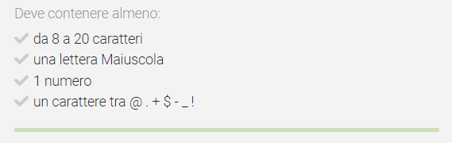

Credential Stuffing
Credential Stuffing is an attack where breached passwords from a
third-party site are used to access other sites, often the original organization
Sites with Databases Leaked Password
:
•
https://scylla.sh/ → free
•
https://intelx.io/ → very complete, not give all the informations but only the name
of the database leaked, then search the the leaked file online
•
https://hashes.org/leaks.php → free downloadable databases leaks
•
@LeakCheckBot→ Telegram bot that give partial password from
https://leakcheck.appspot.com•
https://leakpeek.com/•
https://snusbase.com/ → leaked databases PAID
•
https://dehashed.com/ → leaked databases PAID
•
https://github.com/khast3x/h8mail → will search in most of the
database mentioned above
•
http://hackinflukyc37se.onion/LeakedPass → onion site, to see
password we have to pay
Databases with credentials• From
GitHub
1.4 Billion Text Credentials(44 GB):
◇ Here the Torrent link
magnet:?xt=urn:btih:7ffbcd8cee06aba2ce6561688cf68ce2addca0a3&dn=BreachCompilation&tr=udp%3A%2F%2Ftracker.openbittorrent.com%3A80&tr=udp%3A%2F%2Ftracker.leechers-paradise.org%3A6969&tr=udp%3A%2F%2Ftracker.coppersurfer.tk%3A6969&tr=udp%3A%2F%2Fglotorrents.pw%3A6969&tr=udp%3A%2F%2Ftracker.opentrackr.org%3A1337
◇ If we download this Database we search trough it with this tool by Heath Adams:
https://github.com/hmaverickadams/breach-parse/blob/master/breach-parse.sh
▪ once we have downloaded 1.4 billion credentials file we need to store it in
"/opt/breach-parse/BreachCompilation/data" or change the value of "breachDataLocation" in the
script
Username and Password Common inside a Company
• The
scheme of emails usually are intuitive to
facilitate identification within the company:
◇ name.surname@company.com
◇
surname.name@company.com
◇ ...
By going in the chapter
email
stuffing and search for the name of the company we can understand better the name convention inside the compay
email
• Common
scheme of password ◇ [season][year]:
▪ Spring2021, Spring_2021, Spring21, Spring21!
▪ Summer2021, Summer_2021, Summer21, Summer21!
▪
Fall2021, Fall_2021, Fall21, Fall21!
▪ Winter2021, Winter_2021, Winter21, Winter21!
◇
[month][year]
▪ January2021, February2021, March2021, April2021, May2021, June2021, July2021, August2021,
September2021, October2021, November2021, December2021
◇ Other words that we can find in a password is:
▪ local sports team: Roma, Lazio, Juventus, Barcellona, Inter
▪ local City: Roma, Napoli, Firenze
▪
local college that the user has attended: Harvard, Stanford, Yale, ...
▪ words that are in the email: example
is if the email is marco.rossi88@outlook.com the password could be something like MarcoRossi1988
• Weak
Password Policy: For the passwords exclude the ones that do not match the password requirements. We should have
these requirements when we try to register a new account and we enter a weak password
